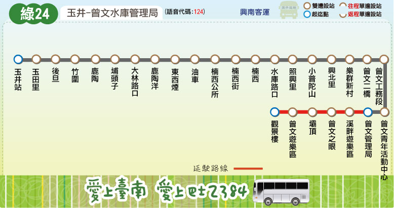

Tainan Bus for FUN
路線圖
路線資訊
票價表
時刻表
轉乘資訊
大台南公車 ─ 綠24 路線圖
Tainan Bus Green 24, Route Map

大台南公車 ─ 綠24 路線資訊
Tainan Bus Green 24, Route Information
起訖點
玉井 － 曾文管理局 -- 曾文水庫
營運公司
興南客運
首／末班車發車時刻
往 曾文管理局：07:20／17:20
往 玉 井 ：07:45／18:00
班距
固定班次
收費方式
里程計費
公車動態資訊
票價表
Ticket Fare
全票
半票
投現
-
-
電子票證
-
-
時刻表
Bus schedule
H
表示假日行駛
大台南公車－綠24 主要轉乘點資訊
Tainan bus Green 24, Transfer information
玉井
綠幹線
、
綠20
、
綠21
、
綠22
、
綠23
、
綠24
、
綠25
、
綠26
、
綠27
橘幹線
、
橘20